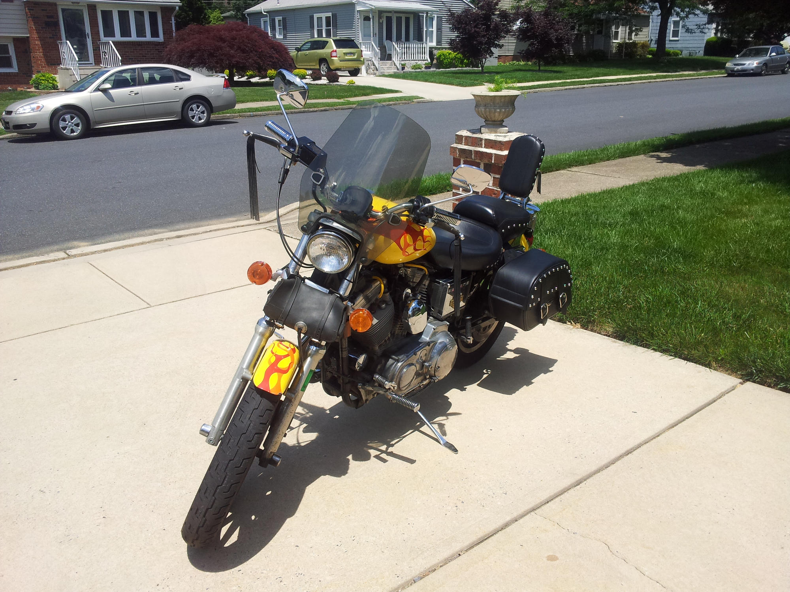
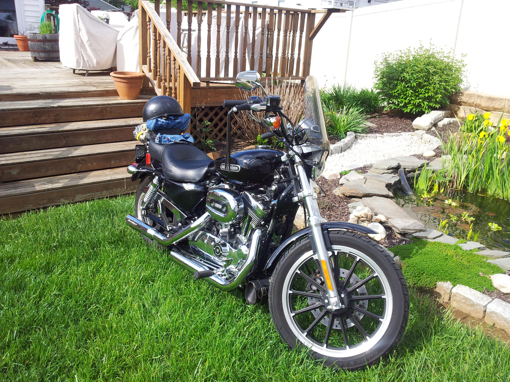
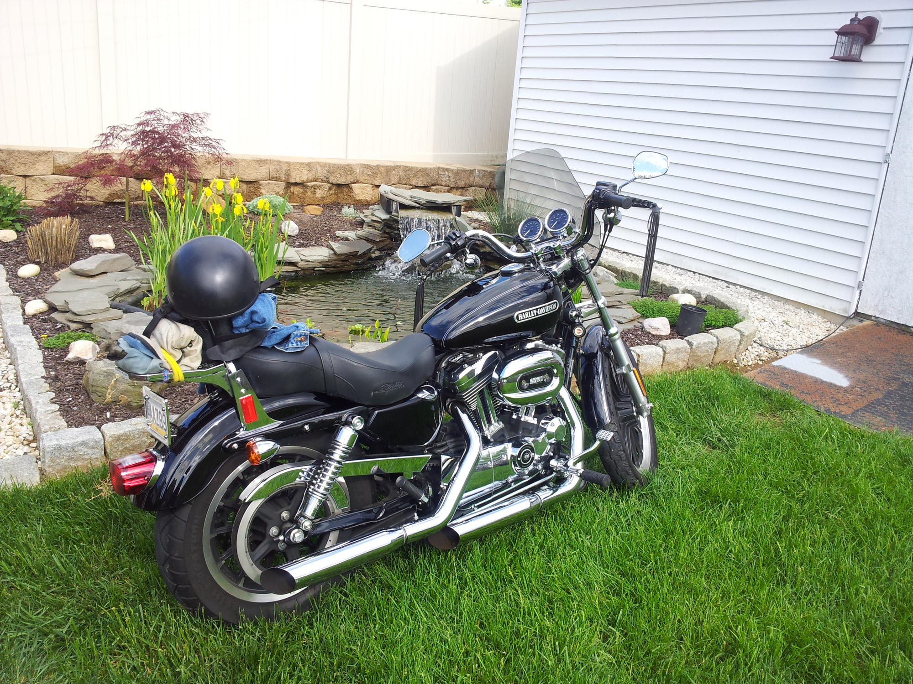

Two wheels, open roads.
A home for my bikes, motorcycle rallies, memorable roads, and practical resources for the ride.
My bikes
Two custom Harley-Davidsons and the roads that came with them.
First bike: custom Harley-Davidson 883
Photos from the 883 collection.





Second bike: black custom Harley-Davidson XL
Black paint and chrome on a custom XL.



Rallies near and far
Check organizers for current dates, locations, registration, admission, and weather before making plans. Some rallies change locations each year.
Pennsylvania & nearby
Lehigh Valley Bike Fest
Whitehall, Pennsylvania: a local gathering with bikes, vendors, music, and stunt shows. Confirm the next event with the host.
Event information →Gettysburg Bike Week
Gettysburg, Pennsylvania: bike shows, vendors, music, and riding in historic country.
Organizer →Americade
Lake George, New York: touring, guided rides, demos, and gatherings in the Adirondacks.
Organizer →Laconia Motorcycle Week
Lakes Region, New Hampshire: a long-running rally with scenic rides and events.
Organizer →Ocean City BikeFest / OC Rock & Ride
Ocean City, Maryland: motorcycles, live music, vendors, and Eastern Shore riding.
Organizer →BMW Riders Association National Rally
The 2027 rally heads to Wellsboro, Pennsylvania, near Pine Creek Gorge and the roads of the Pennsylvania Wilds. Check the organizer for future locations and registration.
Rally information →MSTA STAR Rally
The Motorcycle Sport Touring Association’s 2027 national rally is in Huntington, West Virginia. Check the organizer for registration and future locations.
Rally information →Destination rallies
Sturgis Motorcycle Rally
Sturgis, South Dakota: a major motorcycle gathering and a gateway to the Black Hills.
Organizer →Daytona Bike Week
Daytona Beach, Florida: racing, rides, vendors, and motorcycle events.
Event information →Daytona Biketoberfest
Daytona Beach, Florida: a fall gathering with motorcycle shows, racing, live music, and coastal rides.
Event information →Myrtle Beach Bike Week
South Carolina’s Grand Strand: coastal riding, vendors, and rally events in the spring and fall.
Organizer →Bikes, Blues & BBQ
Northwest Arkansas: a charity-focused rally with music, barbecue, and mapped rides through the Ozarks.
Organizer →Arizona Bike Week
Scottsdale, Arizona: bike shows, concerts, vendors, and a chance to explore the Southwest.
Organizer →Noteworthy rides
Start close to the Lehigh Valley or plan a longer trip. Check road conditions, seasonal closures, weather, entrance fees, and park rules before riding. Watch for wildlife and gravel, plan fuel stops, and ride within your limits.
Pennsylvania & nearby rides
Lower Delaware River
Follow the river on PA 611 and PA 32 through scenic Bucks and Northampton County communities.
NPS driving guide →Delaware Water Gap
Explore the river valley on US 209 and historic Old Mine Road; check for closures and uneven pavement.
NPS scenic drives →Hawk’s Nest & Upper Delaware
New York Route 97 north of Sparrow Bush winds above the Delaware River, with overlooks along the Upper Delaware Scenic Byway.
NPS overlook guide →PA Route 6 motorcycle loops
Choose a mapped loop through the Poconos, Endless Mountains, or Pennsylvania Wilds, with small towns, lakes, and mountain scenery.
Maps and itineraries →Mountain roads & destination rides
Skyline Drive
Virginia: 105 miles along Shenandoah National Park’s Blue Ridge crest, with overlooks and a mostly 35 mph speed limit. Check park fees and weather closures.
NPS driving guide →Blue Ridge Parkway
Mountain overlooks and sweeping curves through Virginia and North Carolina. Connect with Skyline Drive at Rockfish Gap; allow time for stops and changing weather.
Ride guide →Back of the Dragon
Virginia Route 16 between Marion and Tazewell crosses three mountain ranges on a demanding, winding 32-mile ride.
Route information →Tail of the Dragon
US 129 near Deals Gap on the Tennessee–North Carolina border: an 11-mile stretch known for tight curves. Ride at your own pace and stay in your lane.
Route information →Cherohala Skyway
Between Tellico Plains, Tennessee, and Robbinsville, North Carolina, this mountain byway offers high-elevation overlooks through national forests.
Forest Service guide →Custer State Park & the Black Hills
South Dakota: explore the park’s scenic roads and wildlife country on a longer trip or alongside a visit to Sturgis. Give animals plenty of space.
State park information →Going-to-the-Sun Road
Montana: Glacier National Park’s mountain road is a spectacular destination. Its alpine section opens seasonally; check road status and park entry requirements.
NPS road information →Rider resources
Wear protective gear, inspect your bike before departure, and never ride impaired.
Motorcycle Safety Foundation
Rider training for beginners and experienced riders.
Explore training →511PA
Check Pennsylvania traffic, incidents, and road conditions before setting out.
Check conditions →Blue Ridge Parkway closures
National Park Service updates for parkway travel planning.
Check closures →